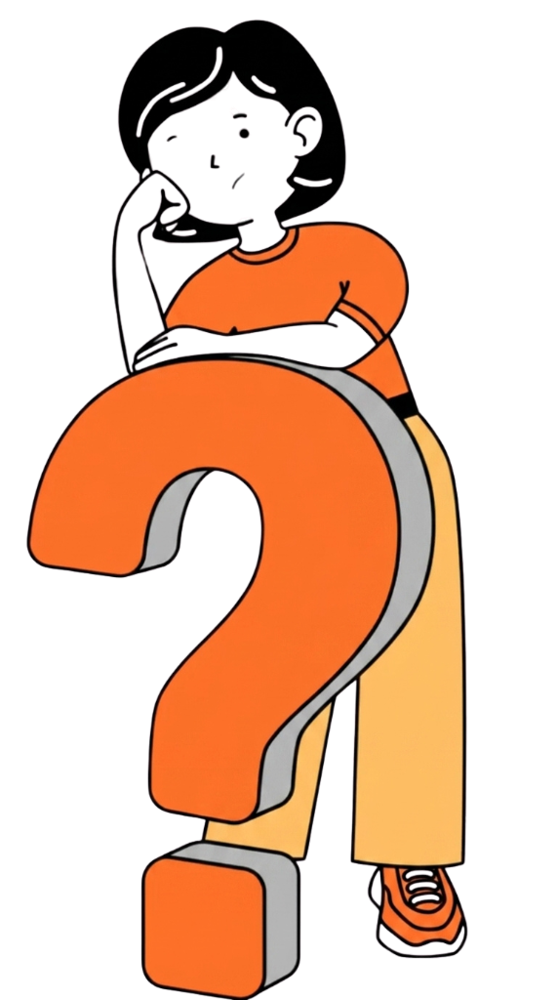
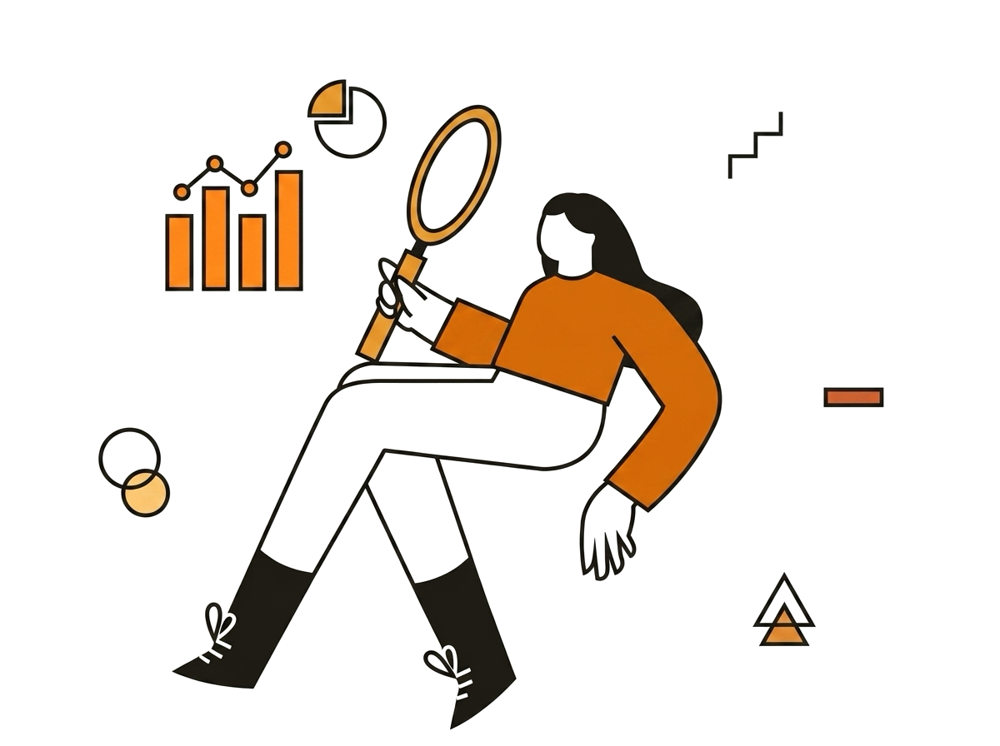
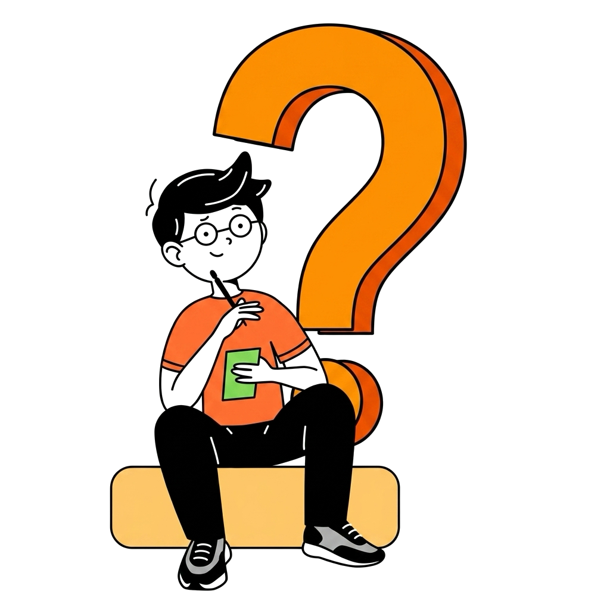
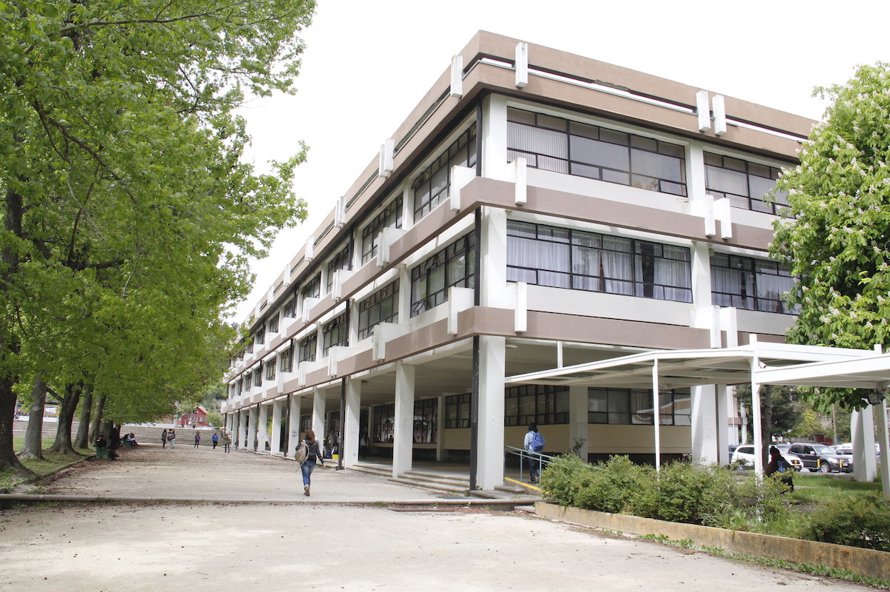

Conversatorio de Validación Cualitativa:
Co-construyendo desde la Experiencia Situada
Este segundo encuentro del Proyecto de Vinculación con el Medio (VcM) es un espacio de diálogo horizontal, libre de evaluación, diseñado exclusivamente para escuchar, validar y enriquecer nuestras propuestas a partir del inmenso valor de tu experiencia práctica y situada.
Validar cualitativamente y co-diseñar la propuesta de análisis del rol directivo escolar mediante el análisis reflexivo de las vivencias y aprendizajes recopilados en esta segunda etapa del proyecto VcM.
A las Directoras y los Directores: Cristina Concha, María José Retamal, Catherine Olivares e Ignacio Villagrán, por compartir su labor diaria.
Coordinación y Equipo de Investigación
Académicos Responsables

Ph.D. Jorge Rojas Bravo
Responsable Principal
Dr. Jorge Ulloa
Asesor Experto
Investigadores en Formación
Elizabeth Zapata
Jorge Cuevas
Nicolás Tamarín
Propósito y Volumen de la Realidad
Dimensión 1: Situaciones de Convivencia
Interrupciones cotidianas
A partir de nuestros registros, levantamos una interpretación que queremos someter a su experiencia; pareciera que el entorno directivo está lejos de ser un espacio controlado y opera bajo una urgencia constante. En este escenario, observamos posiblemente la presión normativa y legal jugaría un rol decisivo para determinar qué se atiende primero.
Imprevistos Diarios
“La jornada típica de mi rol de director, es una jornada que no se puede planificar. Yo todas las mañanas le dedico como un buen hábito, digamos. Llego aquí unos 15 minutitos antes de mi jornada, me siento en mi escritorio, me hago mi café y planifico mi día. (...)”
Mirada General y Foco
“Entendido que el director no tiene que perder esa mirada general. Claro, yo puedo estar muy inmerso en un problema específico (...) y aún así tengo que saber salir de eso ahora y ver...”
Prioridad y Resguardo Legal
“Prioridad: Todo lo que tiene que ver con vulneración de derechos de nuestros estudiantes tiene un plazo y tú puedes denunciar hasta 24 horas. Eso es lo que dice la ley. Por tanto, del momento que uno de mis funcionarios escucha algo y me lo comunica a mí, yo empiezo a calcular mis 24 horas para que se vaya a tribunal cuanto antes. Eso es. La prioridad. Si tengo algún aviso de profesores que faltan o funcionarios por algún tipo de situación de salud.”
Preguntas de Diálogo y Reflexión
Interrogantes del Rol Directivo
1. La Presión de la Urgencia
¿Qué consecuencias tiene la urgencia diaria y la presión normativa sobre su agenda o quehacer diario de una directora o director?
2. El Registro: ¿Escudo o Carga?
Frente a la necesidad constante de documentar y dejar trazabilidad de cada acción, ¿en qué momentos sienten que este registro funciona como un verdadero respaldo institucional y cuándo se transforma en una carga que retrasa la gestión del conflicto real?

Dimensión 3: Articulación de actores, roles y apoyos institucionales
Delegación y Liderazgo Colaborativo
Pareciera que el liderazgo en solitario es hoy sencillamente inviable. Delegar dejó de ser un estilo de gestión para convertirse en una necesidad de supervivencia ante la emergencia, obligándolos muchas veces a soltar el control para colaborar en la gestión de sus propios equipos.
Trabajo en Equipo
“Ehhh Y aun cuando me costó aprender a delegar, creo que llegué al punto de lograr trabajar en equipo bien. Ehhh Así que mi día, si tengo que describirlo en forma simple, diría que soy como un semáforo.”
Límites de Roles
“Sí, y eso, pero eso es muy importante, que todos sepan qué es lo que tienen que hacer ehhh y que no se pasen de la línea y empiecen a hacer el trabajo del otro.”
Colaboración Directiva
“Pero es interesante el cargo de director porque aún cuando tienes que pasar por convivencia escolar, inspectoría general, UTP, orientador y todas las que tiene este colegio, es interesante ver que si hay un líder en esa área y que tú no llegas a gestionar, tú llegas a colaborar en la gestión de alguien más.”
Liderazgo Colaborativo
“Entonces todo este concepto de liderazgo colaborativo, yo creo que hoy en día los colegios están más vivos que nunca.”
Ser un referente positivo
“Es bien curioso todo esto porque yo he intentado llevar un liderazgo que modela con el ejemplo (...)”
Sello de Servicio
“Es el equipo directivo. Otra cosa que creo que también ha sido como una lógica mía de este equipo, que es como un sello, es la idea que cada uno del equipo directivo está al servicio de los docentes. Es decir, ellos no son los jefes a quien el docente tiene que estarle eh, temiendo o retroalimentando, no.”
Cultura del Buen Trato
“(...) Y el buen trato. Cuando yo llegué, un requisito es el buen trato y el buen trato no se habla, se modela y es por eso que desde que uno entra a la puerta acá nos saludamos, a lo menos de un buen saludo, sino de un abrazo, de un beso desde que en recepción hasta acá.”
Preguntas de Diálogo y Reflexión
Dilemas del Liderazgo Colaborativo
1. Control vs. Empoderamiento
Respecto a que intentar resolver todo en solitario hoy podría ser inviable, ¿cómo se puede resguardar una adecuada coordinación/ gestión de la escuela y, al mismo tiempo, generar espacios para empoderar a otros integrantes del equipo a liderar desde sus roles?
2. El Rol del Director como Colaborador
¿Qué desafíos o resistencias enfrentan cuando delegan resoluciones críticas y deben asumir, desde la dirección, un rol de "colaboradores" en la gestión que realizan sus propios equipos intermedios?

Dimensión 4: Tensión Pedagógica y Mejora
Urgencia Pedagógica y Mejora
Desplazamiento o interrupción del trabajo pedagógico. El tercer elemento que buscamos contrastar hoy es cómo la urgencia desplaza lo pedagógico. Nuestra lectura de los datos sugiere que, para sostener la escuela en el día a día, la exigencia académica estricta termina dando un paso al costado para priorizar la convivencia.
“(…) La convivencia escolar, como dije al comienzo, es algo que se enseña, no es algo inherente en nosotros, no es algo natural en nosotros. Por lo tanto, tiene que enseñarse de forma significativa. Para que se enseñe en forma significativa tiene que estar en el currículum y en el currículum de todas las asignaturas, no solamente de Consejo de curso, por ejemplo, o de orientación. Tiene que estar en todo.”
“Entonces, la convivencia escolar se traspasa al ámbito académico, pero como parte, como una parte esencial de la actitud y de los OAS que están establecidos como actitudinales ehhh hacia tanto la asignatura como hacia sus pares. Así que es parte.”
“Aquí es donde tiene que aprender acá, no va a ser fuera, de hecho, no me interesa que después lleve tareas para la casa, porque en la casa yo quiero que comparta con su familia, si lleva una tarea y la familia además está la presión de tener que enseñarle, terminan discutiendo entre los 2 y entonces yo necesito que haya un acercamiento a su familia, que se conozca mejor, que lleve cosas bonitas y que si va a llevar cosas para la casa sean voluntarios.”
“A mí no me importa que solo le enseñe la asignatura, me importa que le enseñe para la vida, cómo te sientes, el tono de voz que usas cuando estás y eso es muy importante. Un día cuando nos toque estar juntas vamos a ir a algunas salas para ver también las relaciones que se dan con cómo los profes se dirigen a ellos, que es lo que nosotros promovemos en esta relación.”
Mueve el mouse sobre el prisma para rotarlo.
Preguntas de Diálogo y Reflexión
Interrogantes de la Tensión Pedagógica
1. Reconfigurar el "Aprender"
Ante la irrupción constante de necesidades socioemocionales y de convivencia, ¿sienten que en sus comunidades se ha tenido que reconfigurar la definición misma de "aprender", priorizando la contención y la formación para la vida por sobre la cobertura del currículum tradicional?
2. Proteger el Tiempo Pedagógico
En medio de esta reconfiguración diaria, ¿qué estrategias o decisiones, muchas veces invisibles para el sistema, aplican ustedes para proteger el tiempo pedagógico y evitar que los propósitos de mejora escolar desaparezcan bajo la contingencia?

Yo diría que la convivencia escolar a futuro, lo que busca es construir un buen ciudadano. Ten por seguro, (...) que si tú tienes aquí un niño que es dialogante, que logra negociar sabiendo que no va a ganar todo y que (...) expresa su opinión sin ofender al otro. Lo que estamos construyendo es un buen ciudadano y la misión del colegio es súper linda. En el fondo, tú necesitas buenos ciudadanos para tener una sociedad sana. Yo creo que convivencia escolar en términos inmediatos es eso, buscamos generar un ambiente propicio para que nuestros estudiantes aprendan y a futuro enseñarle cuál es la forma correcta de convivir con los otros ciudadanos (...)
"¿Cómo se configura la complejidad del liderazgo escolar cuando las tareas pedagógicas conviven con urgencias de convivencia, cuidado, normativa y gestión cotidiana?
